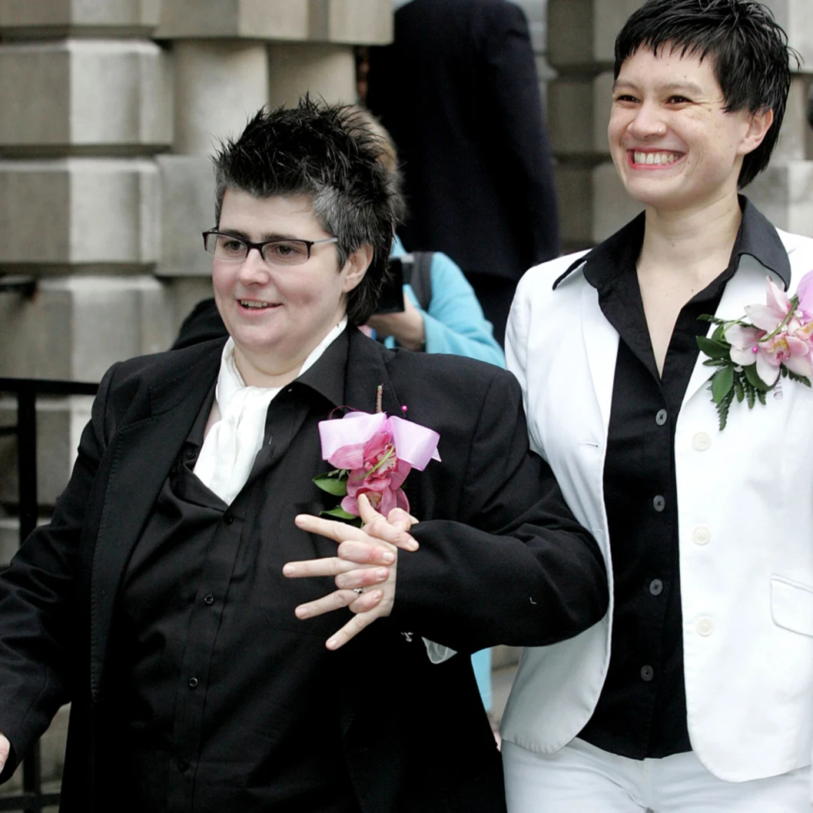
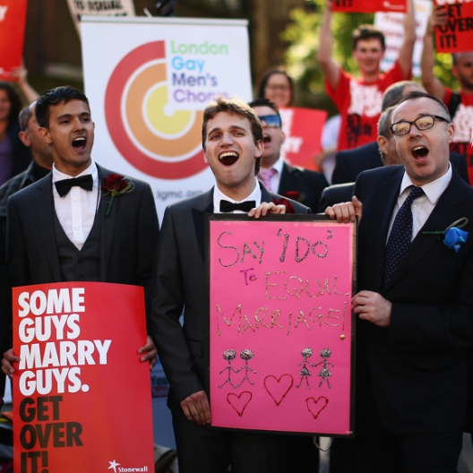

A Timeline of LGBTQ+ Progress and Challenges
Navigating Victories, Setbacks, and Resilience Across Decades.
-
1967
The Sexual Offences Act
In 1967 the “Sexual Offences Act” was passed which considered the private sexual act between consenting men over the age of 21 as legal. This is a clear achievement for the male gay community as their sexualities were more accepted from a legal standpoint. However this did not stop law enforcement from discrimination as even after this legislation, between the years 1967-1997, 23,669 men were convicted of buggery and 35,394 men were convicted of gross indecency. This shows that even with the decriminalisation of homosexuality the hate crimes and unfair treatment still ensued.
-
1970s
Challengers Of The Queer Community
“In the late 70s, an obscure law was enforced resulting in police in gay bars holding a wooden rod between men who were dancing, to make sure they were far enough apart. Some years later, the police persecuted same-sex couples holding hands on Canal Street resulting in gay men and women lying down on the road to block their police vans.” - Paul Wheatley (pride pioneer). This provides insight on the kind of unfair treatment the queer community of Manchester faced in earlier times and their bravery to challenge it. It also shows that despite the laws created to provide gay rights there was still laws being created to hinder them.
-
1985
First Every Manchester Pride Event
However discrimination carried on through out the 80’s as the Section 28 law was passed, May 1988, “Clause 28 or Section 28 was a legislative designation for a series of laws across Britain that prohibited the “promotion of homosexuality” by local authorities, including a ban on schools teaching the “acceptability of homosexuality as a pretended family relationship”. - Peter J Walsh. This naturally caused outrage amongst the queer community as it was clear this was an anti-gay law trying to hide and exclude them from society.
-
1988
The Section 28 Law
However discrimination carried on through out the 80’s as the Section 28 law was passed, May 1988, “Clause 28 or Section 28 was a legislative designation for a series of laws across Britain that prohibited the “promotion of homosexuality” by local authorities, including a ban on schools teaching the “acceptability of homosexuality as a pretended family relationship”. - Peter J Walsh. This naturally caused outrage amongst the queer community as it was clear this was an anti-gay law trying to hide and exclude them from society.
-

1999
Pride Month
In lighter news in 1999, June was officially declared Pride month, giving the queer community more to celebrate and be proud of accomplishing.
-

2003
Progression Against Homophobia
Later on in November 2003 the law Section 28 was finally repealed, showing progression against homophobia within the legal system and emphasising the strength and will of the community.
-

2005
Civil Partnerships Acknowledged
Furthermore, a few years later in 2005, civil partnerships were acknowledged between same-sex couples. This shows how the queer community was becoming more accepted as they carried on to celebrate these victories with consistent Pride events taking place every year.
-

2013
The Marriage Act
After many protests, in 2013 The Marriage Act was finally created allowing the union of same-sex couples in legal marriages. This was naturally a very big achievement for the queer community, many going on to have gay marriages in the following year 2014.
-
2017
The Policing and Crime Act
Even after all this progression men who were originally convicted of a crime related to their homosexuality still had records or were incarcerated despite the laws they broke no longer existing. Because of this in 2017 these men were pardoned under the Policing and Crime Act.